Not ruled. Nothing here is approved. For the driver's brief of 2026-11-24 (row mock-38), after the impeccable audit of the built Player tab on 2026-11-23. Each frame is two pictures of the built screen from main (the layout page, the sample character Brannoch; invented names only): left as built, right the same screen with the fix laid over it as CSS from the tokens (or, for words, the words changed in the page). Light, a tablet held sideways (1180 by 820), unless the frame says otherwise. Kept as asked: the word "Light" for both the burden and the lantern's button, and "No notices" in the phone's top spot.
Numbering The audit's findings text was not saved. The nine findings below are rebuilt. Their numbers follow the only record written against the real findings, the earlier worker's picture script (mock/render.mjs in the notes repository), which numbers them 1 to 9. The brief calls the rail's tabs and handle "finding 6" (that is audit picture 6); in the script that is finding 1, and its 6 is the two-button rows on a phone. Both have a phone frame here. Francis, please correct the numbers and the wording.
Pictures = rebuilt from the audit's seven pictures and the built code. Script = from the earlier picture script only; none of the seven pictures shows it, so it is the weaker evidence.
Findings 1, 4, 5, 7 and 9 together (the others need a messy state to show).The left column's lower edge fades where more lies below (finding 5).
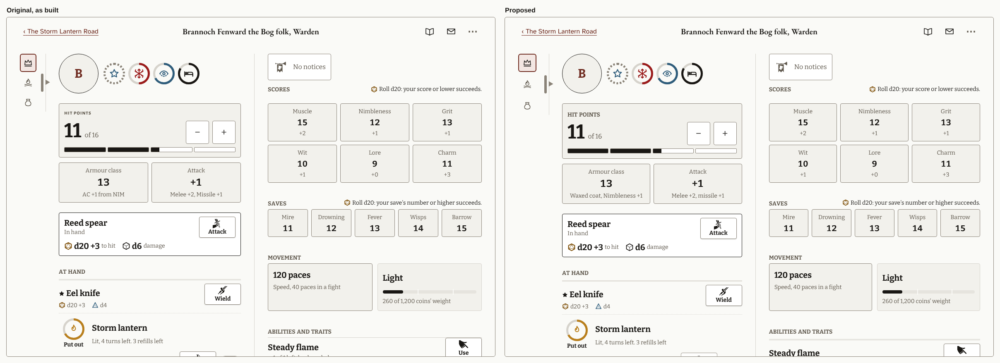
Found: the rail's three tabs are 40 px wide (the floor is 44) and 4 px apart (the floor is 8); the handle's 44 px tap area touches the rail (0 px). Proposed: tabs 44 wide, 8 px apart; the handle 8 px clear of the rail.Measured on the built screen, before and after. Cost: the left column moves 12 px to the right.
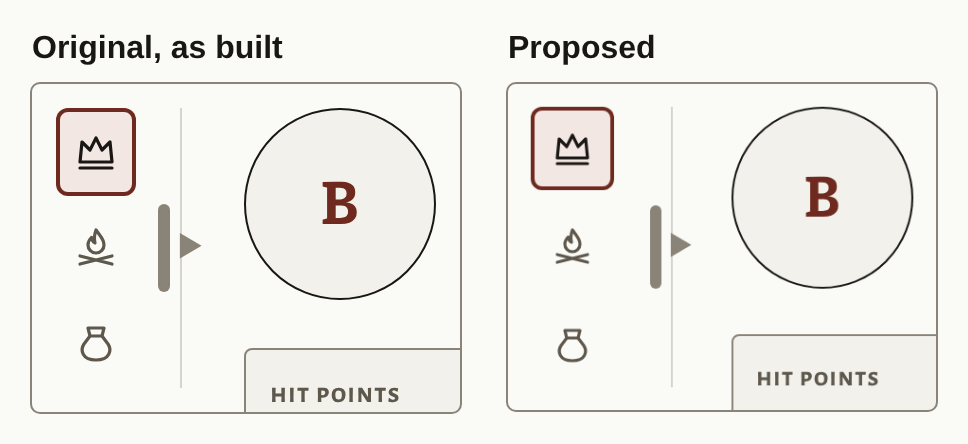
A tablet held upright (820 by 1180): the tabs sit in a row, 4 px apart as built; proposed 8 px.
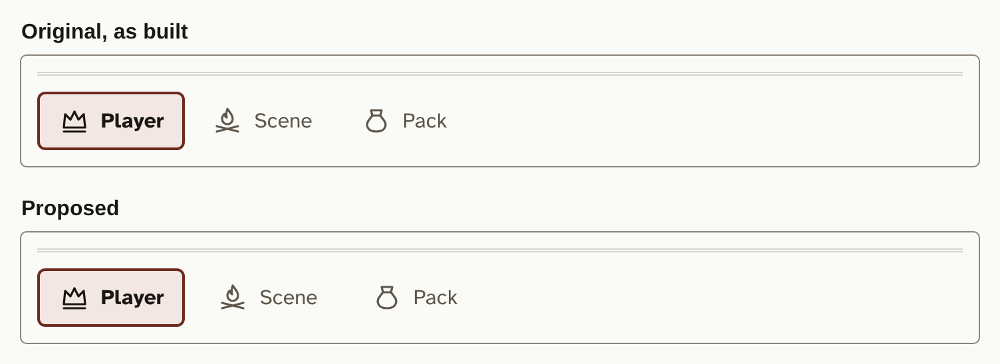
A phone (375 px): there is no rail and no handle; the four tabs are a bar at the foot, each 94 by 65, touching. No change proposed.⚑ Does the 8 px between targets apply to a tab bar's tabs? As built they touch, as tab bars usually do.
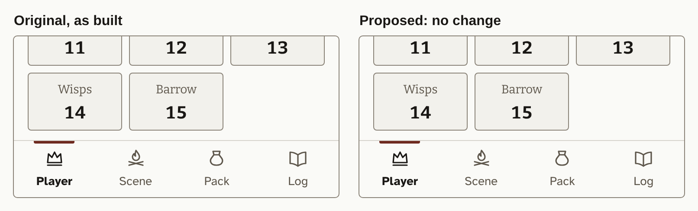
Found: with a long weapon name the buttons wrap under it, 4 px below the words. Proposed: 8 px.
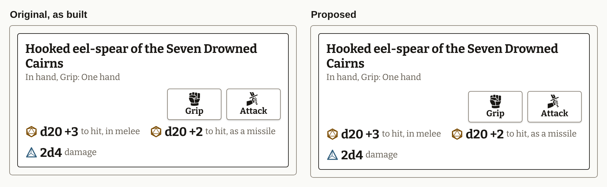
Found: the ⓘ beside "Abilities and traits" sits 4 px above the first pinned trait, itself a target. Proposed: 8 px.
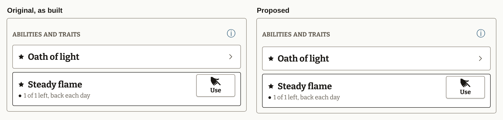
A tablet held upright, where it happens. Found: the bar's name takes the room and the way back shrinks to "‹ …" (44 px), its words gone; the name is cut and can be read in full nowhere. Proposed: the way back keeps at least four targets' width (176 px), and the head's line carries the full name, wrapping.⚑ The name in the head's line touches ps-5 ("the bar reads name, the kindred, title"): it needs a ruling. "No notices" keeps its place under the line.
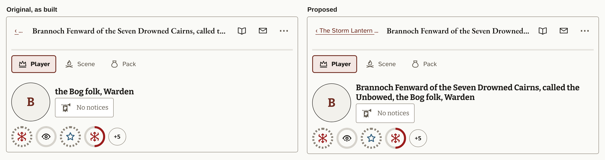
Held sideways: the way back already keeps 179 px ("The Storm Lantern …") and the name fits. No change at this width.
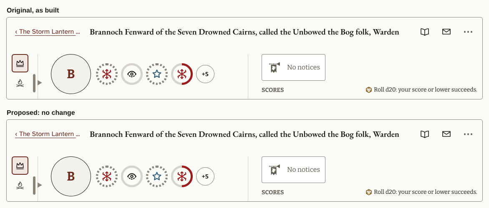
Found: the first trait's "Use" starts 5 px under "Abilities and traits", its top edge on the heading's rule. Proposed: the heading gets At hand's double rule and the row starts 8 px below it.Only this heading in the right column would carry the double rule (see the critique, 1).
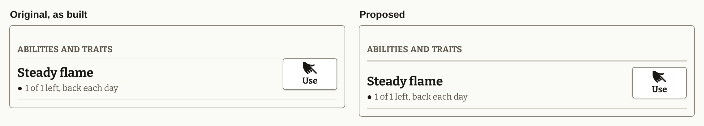
Found: held sideways the left column scrolls by itself; its content is sliced at the top and the foot with nothing to say more lies beyond. Proposed: a 32 px fade on an edge only while something is cut there (shown scrolled: both edges).Cost: the screen must know whether the column is scrolled; more build than the other fixes. Not checked in dark.
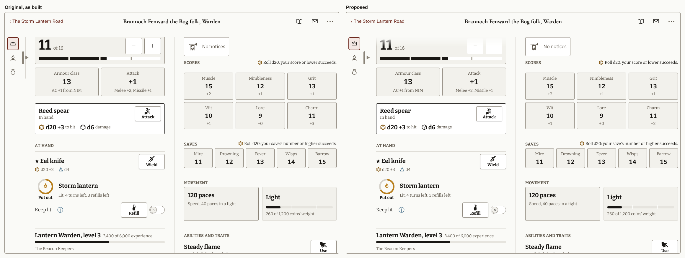
A phone (375 px), Larger text. Found: a row with two buttons leaves its name a 151 px column (measured): "Hand axe of the Seven Cairns, twice reforged" runs to six lines. Proposed, on a phone only: on such a row the words take the full width (343 px) and the two buttons sit under them, to the right.The list gets shorter here (the axe's words: 302 px tall to 152). One-button rows keep the button beside the name. No sideways scroll before or after (measured, 375 px). ⚑ At Larger text only, or at every text size on a phone? At standard text the same row's words go from 186 px tall to 126.
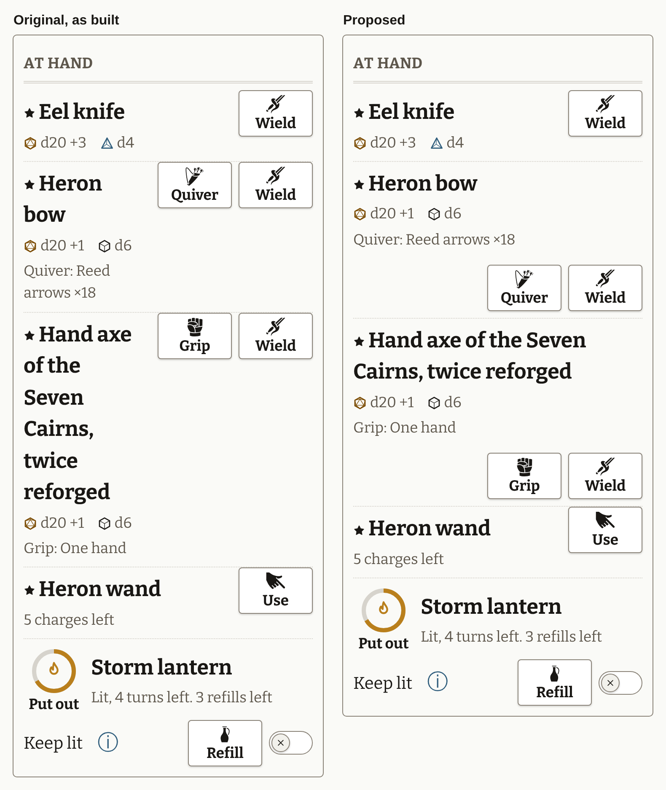
A tablet held sideways: the name keeps a 248 px column and wraps to two lines at most here. No change at this width: the fix is for a phone only.
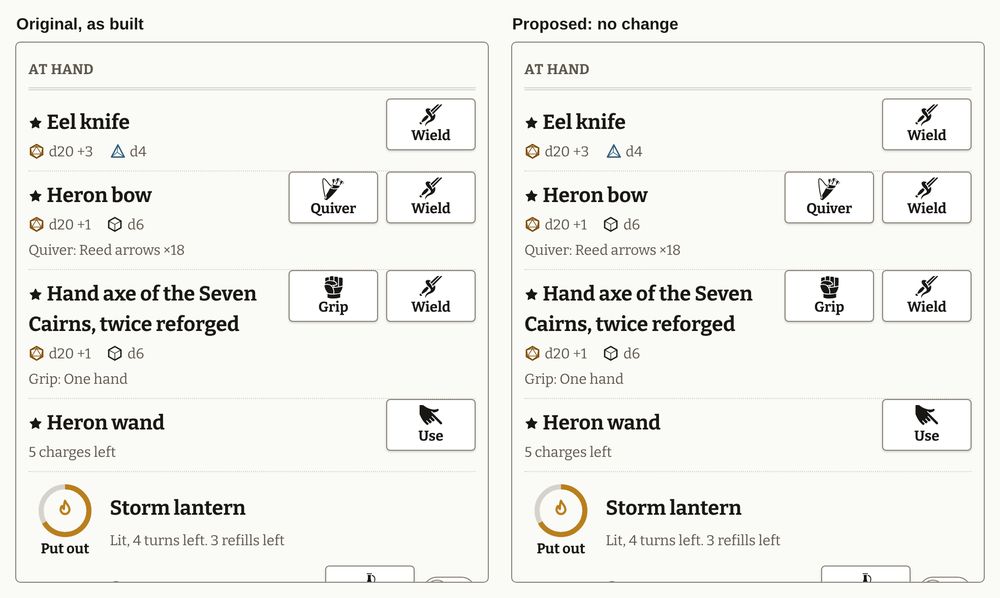
Found: "AC +1 from NIM" uses two short forms the screen never spells out (the tile above it says "Armour class", the score says "Nimbleness"); "Missile" has a capital mid-line. Proposed: "Waxed coat, Nimbleness +1" (what he wears, then the score) and "Melee +2, missile +1".⚑ Words The proposed line names the armour worn, which the built line does not: new content, for a ruling. A long armour name is not drawn.
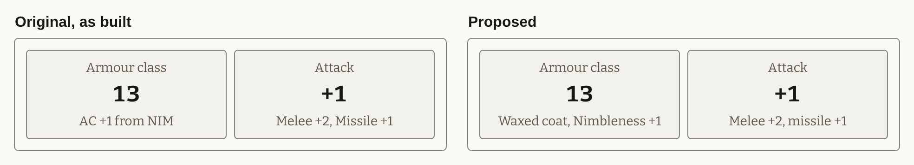
Found: "Can't move" is written twice side by side, and the warning sign touches its word. Proposed: the speed tile reads "0 paces"; the sign stands 8 px from the word.⚑ Words "0 paces" is new wording.
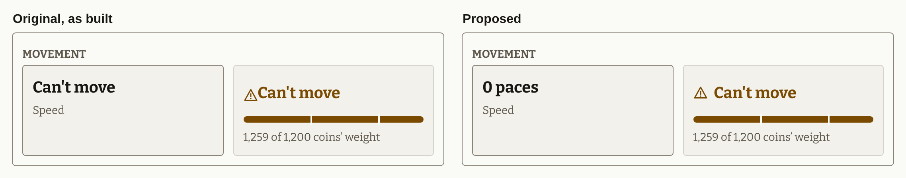
Found: "Hit points" is set in the plain face, small and spaced out; every other heading on the tab is in the book face's small capitals. Proposed: the same style as the section headings.
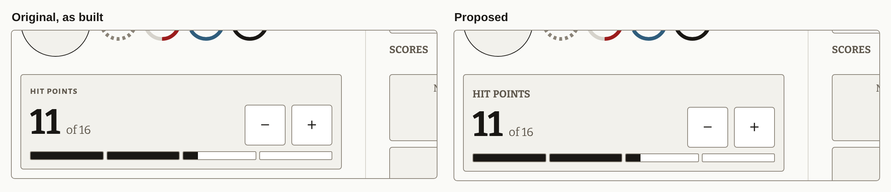
impeccable critique, of this page's proposed frames)The skill here is a condensed port without its tooling, read from its file: no detector or linter ran; this is a read of the pictures above. It changes nothing: Francis picks by number. Surface: an app screen used at the table (the skill's "Operate" mode: scanning and consistency over expression).
| Heuristic | 0 to 4 | Why |
|---|---|---|
| Visibility of system status | 3 | The fade now says "more below"; the over-loaded state reads at once. |
| Match to the user's language | 3 | The short forms go; "0 paces" beside "Can't move" still says one thing twice. |
| User control and freedom | 3 | The way back keeps its words. |
| Consistency | 2 | "Hit points" joins the headings, but fix 4 gives one heading a rule the others lack, and fix 6 makes two row shapes in one list. |
| Error prevention | 3 | Targets 44 px and 8 px apart where the fixes reach. |
| Recognition over recall | 3 | The rail is still three signs with no words when held sideways. |
| Flexibility and efficiency | 3 | Unchanged. |
| Minimalist design | 3 | Nothing added but a rule and a fade. |
| Error recovery | 2 | No error, offline or loading state is drawn on this page. |
| Help and documentation | 3 | The ⓘ and the roll lines stay. |
| Total | 28 of 40 |
What works. Every fix is small and keeps the screen as approved: nothing moves to a new place, no new colour, no new part. Fixes 1, 2 and 9 are plain repairs to the floors and the type the tab already uses. Fix 6 gives the biggest gain to the player with the least room. Cognitive load and hierarchy: no heavier than before; hit points stay the loudest thing, with one bordered card (the weapon) below them; fix 9 quiets one odd label. The tab suits its mode: a screen to glance at, not to read.
layout)polish)layout)clarify)harden)distill)clarify)typeset)harden)Walked as: a first-time player (finds the tabs; does not find the handle, 7); a player on a phone at Larger text, interrupted mid-fight (fix 6 helps most; 3 above); a keyboard or screen-reader user (the fixes change no names or order; the fade is visual only; not tested with a reader). Questions for Francis: is fix 6 for Larger text only or every phone? Should the tab bar's tabs keep touching (38-1)? May the armour's name appear in the armour class tile (38-7)?
Checked, measured on the built screen before and after each fix: the rail's tabs 40 to 44 px wide, 4 to 8 px apart; the handle 0 to 8 px from the rail; the weapon's buttons and the ⓘ 4 to 8 px; "Use" 5 px under its heading as built; the way back 44 px wide with a long name upright, 176 or more proposed. Every fix uses the tokens only (--tap, --space-1 to --space-6, --divider, --ink); no new colour or size. Nothing under 14 px: fix 9 uses the headings' own size. No disabled button, no new accent button, no confirm. Messy data: the long name (38-3), the long weapon names (38-2, 38-6), 1,259 of 1,200 (38-8). 375 px: 38-1 and 38-6; the built screen has no sideways scroll at 375 px before or after fix 6 (measured).
Not checked or not drawn. Dark mode (the brief asked for light). Loading, offline and error states. Fix 5 is drawn as a still: the "only while something is cut" behaviour is described, not shown working. Fixes 2 (pins), 6 and 8 rest on the earlier script, not on the audit's pictures. Fixes 3, 6, 7 and 8 are not drawn at the other widths. Contrast is unchanged by any fix except the fade, which was not measured. Tome #1118 fb-1 lives in a repository this session cannot read: skipped. These are pictures of the built screen with CSS laid over it, not hand-drawn frames as on page 37, so the page has no dark column.